The design of a recipe management app.
Working on the design of a soon-to-be released recipe management app for iOS, I focused on a clean and efficient user experience. The emphasis was on an app with mise en place (a French culinary term meaning "everything in its place"), where a user could easily put in and pull out recipes without being distracted or lost in a cluttered interface; the same as a chef on the line at a packed restaurant.
For the MVP release, the goal was to create a modern and attractive layout that simplified the process of managing recipes on iOS and iPadOS (and eventually macOS). The app was designed with a focus on efficient navigation, organization, and preparation to ensure user success throughout the app and in the kitchen.
Target Audience
The target audience was composed of users that were frustrated with UX design choices, pricing, or aesthetics of competing recipe managers. Secondary audiences included users new to saving recipes (differentiated from users that are looking to manage and digitize stockpiles of printed/handwritten recipes) as well as productivity nerds.
Captivating these early users will be the first step in an evolving app strategy that will introduce users to a rich suite of mostly behind-the-scenes automated features. In the future, without needing to drastically change the UI, a number of machine-learning based import and conversion features will be released. But the complexity is meant to be hidden from the user. And so with the initial design, it was critical to set the tone as this being a simple and dependable app that users will be able trust. This will help to build a user community that can be leveraged for future user research and beta testing.
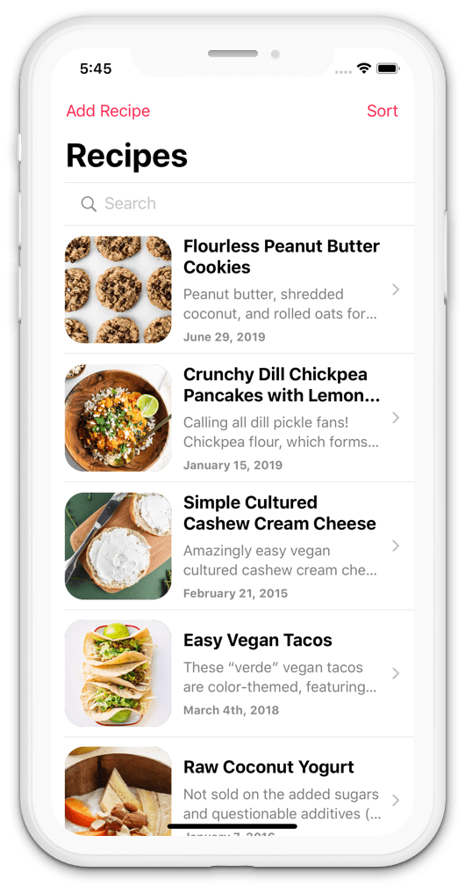
Competitive Research
While exploring the existing market, the goal was to establish design objectives that could differentiate this new app from the existing recipe management market despite the plan to launch an MVP with fewer features.
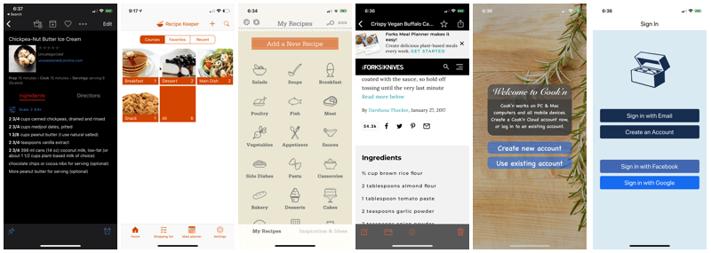
Paprika 3 dominates users reviews and online forum recommendations. It is cross platform (iOS, macOS, Android, and Windows). Beyond recipes, it also focuses on meal planning and grocery lists. The main complaint for new and long-term users is that purchasing the app across multiple platforms feels expensive (for example: $4.99 for iOS in addition to $29.99 for macOS); especially when major upgrades require re-purchase.
The remaining iOS recipe management apps blurred together; most with poor reviews. Most were outdated and did not support newer iOS features such as dark mode. Many required sign up before being able to use the app.
Other tangential competitors were recipe platforms like Yummly, NYT Cooking, and All Recipes. This style of recipe app caters to a community based and browsing oriented fashion of sourcing recipes. Instead of users creating or importing recipes from disparate blogs and platforms, these apps are often free in exchange for marketing revenue. These were considered outside the scope of the recipe app that I was designing.
Overall, the main takeaway from this research was that there was a lot of room for improvement in aesthetics and the general user experience. More importantly, it helped shape the goal of keeping the development and server costs low so as to be able to offer an inexpensive yet profitable recipe management app during the MVP phase.
Key Performance Indicators
This app started as a side project; and back then the focus was on designing an app that I could be proud of developing and submitting to the App Store. Prior to focusing on the UX of this project, the main blocker was my intent on developing advanced machine learning features that would far outperform any competing product for a niche audience of recipe collectors. This work had taken time, often getting de-prioritized, and up to the refocus on UX, had been built in a bubble with lack of user input.
The design goal to reach KPIs: carve out a much simpler niche (than artificial intelligence) in the current market based on usability and aesthetics.
Once the app is released, the KPIs for the first six months will be as follows:
- Active Users
- 100+
- App Store Rating
- ⭐️⭐️⭐️⭐️➕️
- Beta Testers
- 30+
These KPIs changed the original focus of the app and the UX decisions that were made. Instead of focusing on building something in a user-less bubble, the way forward was to lean heavily on a simple and delightful user experience. This will allow for a more refined approach to building out the machine learning algorithms based on future user research and beta testing.
Pseudo User Research
In the discovery phase of this project, with a lack of time and budget, I was frugal in my approach to tapping into the user's mindset.
Again, the main goal of this MVP app design was to get an app in front of users in order to gather legitimate user research. With lack of existing users and the time to seek out and survey potential new ones, I leaned heavily on app store reviews collected during competitive research along with online cooking forums and subreddits.
What motivates a new user to seek out a recipe management app?
What inspires users to recommend the recipe management apps that they are currently using?
With these questions in mind, I set out to gather anecdotes and store them in a structured Airtable base (similar to a spreadsheet, but so much better!). After reading through and documenting hundreds of comments and reviews, some similarities began to surface.
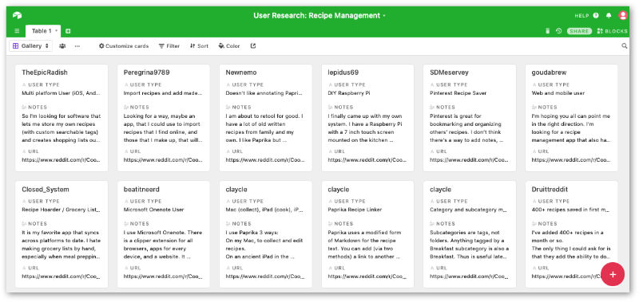
The first, and most surprising, insight was that a subset of users actually use the meal planning and grocery list features in recipe management apps. My personal bias, and one shared by some other users online, was that I would rather use separate focused tools for each of those jobs as opposed to mediocre implementations within a recipe manager.
This finding directly impacted a design "compromise" that I was not originally intending to account for. Instead of fully abandoning the desires of users that seek meal planning and grocery lists, I have now incorporated plans for a user experience that seamlessly exports ingredient lists to grocery list apps (with support for the Apple Reminders app at launch) and meal planning agendas to calendars (like Apple Calendar and Fantastical) or other productivity tools (such as Things 3, Omnifocus, and Sorted).
The other design focus that was influenced by user findings was in regard to recognizing recipe "hoarders" (one user collected 400+ recipes in a single month). These are the potential power users and ones that could benefit the most from an uncluttered UI and fast read speeds. This emphasized the importance of a simple import process coupled with tags and advanced search capabilities.
A portion of users bring baggage in the form of physical cookbooks and handwritten recipes that need digitizing. This was noted as a potential future OCR feature, but I explicitly decided against designing for this type of user for the foreseeable future.
A smaller substet of users were confused or did not like the UI of existing apps. This is the real niche that the MVP is targeting.
And finally, a number of users fell into the recipe-curious camp. This was the least complicated group and formed one of the main target audiences: those new to recipe management that were open to suggestion. This influenced design decisions and emphasized a focus on balancing ease of use, iOS familiarity, and an aesthetic that could be subjectively better than current market offerings.
UI Design
Instead of using Sketch to mock up this design, I explored using SwiftUI (Apple's new declarative approach to front-end coding) as a prototyping and design tool. Overall, it worked surprisingly well and I plan to use a similar approach in future iOS projects.
The design follows Apple's Human Interface Guidelines. In order to fulfill the design requirement of feeling familiar and pleasant to use, these were important guidelines to follow for native iOS and iPad environments. And during the competitive research phase, I also discovered that a number of competitors blatantly went against these Human Interface Guidelines or used outdated versions of these guidelines.
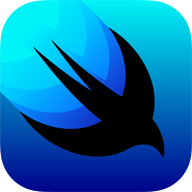
UI Design — Seeing the Light, and the Dark
From the onset, this app was designed with both light and dark modes in mind. Given that this app will be released with support for iOS 13 and above, it was imperative to fulfill this basic user expectation. Designing for dark mode will also offer differentiation from numerous recipe management apps that still do not support dark mode.
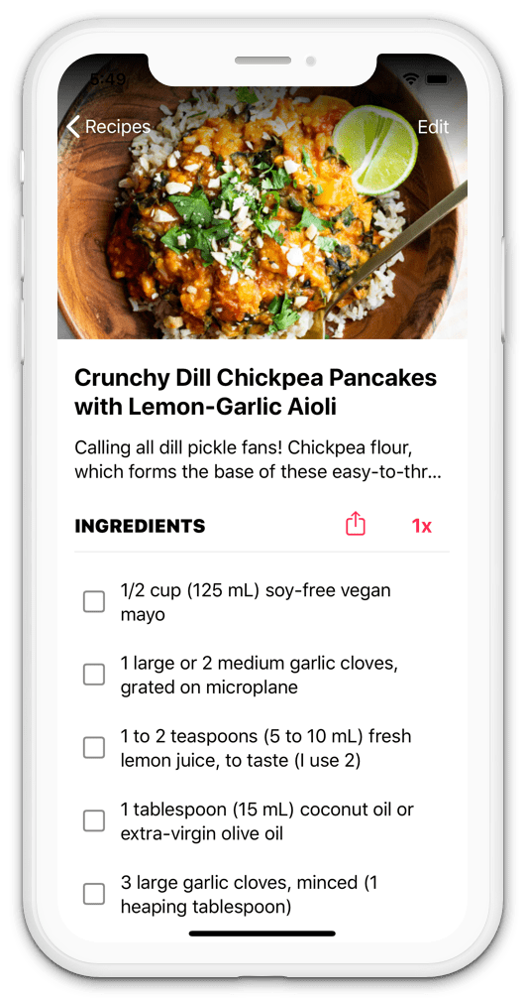
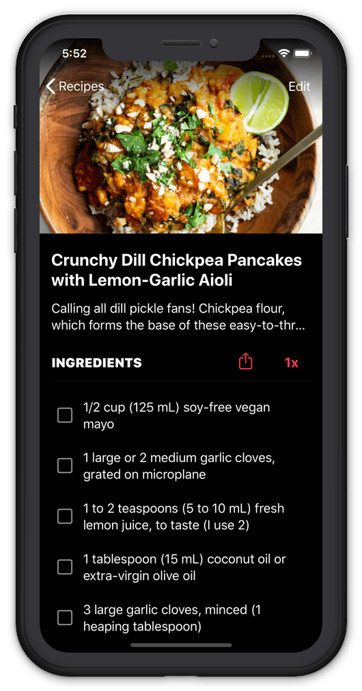
UI Design — Launch Sequence
The app launches to the recipes list view where the user can view, sort, and search for stored recipes. If not using the import bookmarklet or share features in iOS to import recipes into the app, there is also an "Add Recipe" button in the top navigation bar where a user will be prompted to enter a recipe manually or paste a URL for direct import.
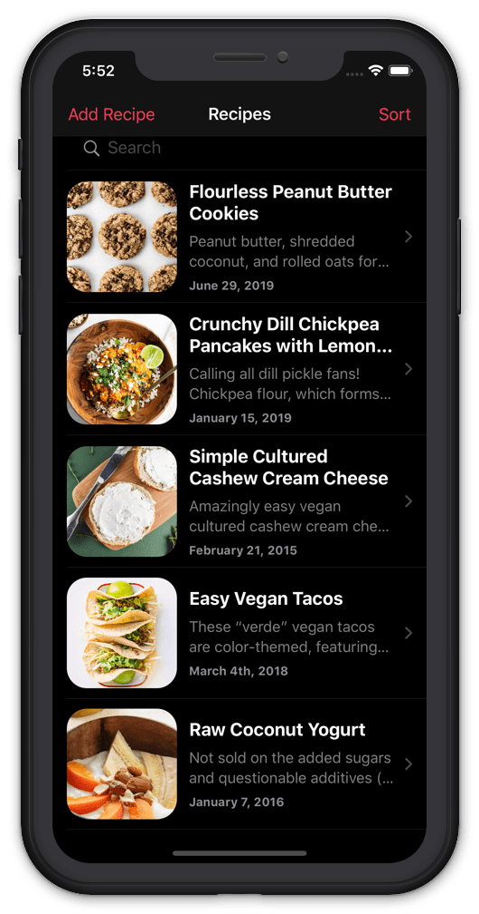
UI Design — Details
Tapping on a recipe navigates to the recipe detail view. If the recipe has an image, it will be fit to display full width at the top of the screen. I found it important to balance the aesthetics and familiarity of large images on iOS with the usability of accessing the heart of a recipe fast.
To further emphasize the most important bits of a recipe, the recipe description is truncated to a maximum of two lines. If a user wishes to re-read the description (they most likely already read it before originally importing the recipe), then tapping on the description will expand it to full line length. During the pseudo user research phase, the importance of getting to the ingredients was further emphasized with comments wishing that people didn't have to scroll past long personal stories to access the actual recipe on recipe blogs. This is one of the key perks of using auto import features in recipe managers; all the personal blogger stories are removed. So my decision was to make certain that long descriptions wouldn't require scrolling either!
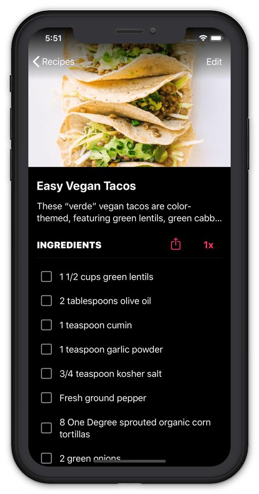
UI Design — Sharing is Caring
From there it is possible to share the entire recipe or share ingredients to a third-party grocery list app (or in the case of the MVP, only to Apple's Reminders app). If a user taps on 1x beside the Share button, a modal will pop up with the option to drag a slider to scale ingredients. When exploring ways to make the scaling process intuitive (surprisingly not so in some competitor apps), I stumbled across the idea of visually representing scale using a repeating pattern of the recipe's photo (or an illustration of a cookie if no image exists).
UI Design — Visual Scaling
I found the visual component of scaling important because of the choice to mark the ends of the slider with division and multiplication symbols. While a multiplication symbol seems easy enough to interpret as multiplying a recipe and division for dividing a recipe, I did not want to rely on this being intuitive on its own the first time a user opens the scaling modal. By adding the visual representation, multiples of the image are displayed as the user slides up and pieces are sliced from the original image (like a pie) for anything below the original scale. This provides an immediate comprehension of the scale slider for sighted users.
And for VoiceOver users, these images are purposely not exposed to VoiceOver due to it being an accessibility limitation and distraction. All other features should be accessible via VoiceOver and will be tested for such before release.
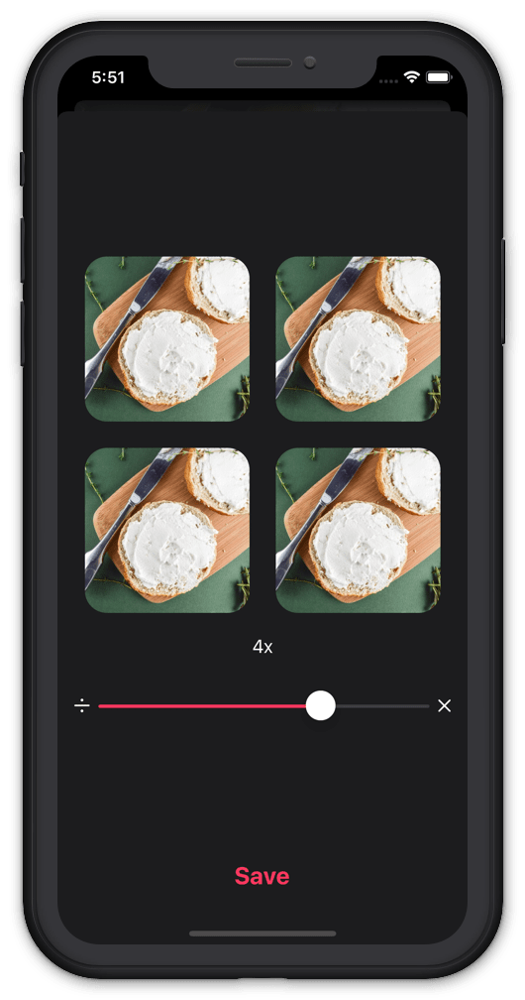
UI Design — Ingredients and Beyond
Continuing on to the ingredients list, it is possible for the user to tap the box next to each ingredient and mark each one as complete. It was purposely designed for these checkboxes not to be stored values. In doing so, if a user navigates away from the recipe detail view, the checkmarks will reset to unchecked. I favored this approach for ease of the majority use case. When a user is cooking, they can optionally check off each ingredient as they collect it or as they use it. But this is a one-time need. Once they have worked through the ingredient list, it is no longer necessary for them to remain checked. Therefore, once the user is done cooking, then they can navigation away and the ingredient list will be reset upon the next time the user prepares to cook the recipe.
Beyond the previously listed design choices, the detail view shows recipe steps and notes as well as offering the ability to edit the recipe text in place. And a back button returns to the recipe list.
At this stage in the MVP life cycle, I explicitly decided not to include a hamburger menu nor a tab bar. The only forms of navigation is via the navigation bar, in-view buttons, and native iOS swiping gestures. This further empowers the user to fly through the app unencumbered by countless taps and navigation. This design constraint also forced me to focus on the most important aspects of the app (as describe in previous sections) without adding unnecessary views. The end result was a clean and nimble user interface.
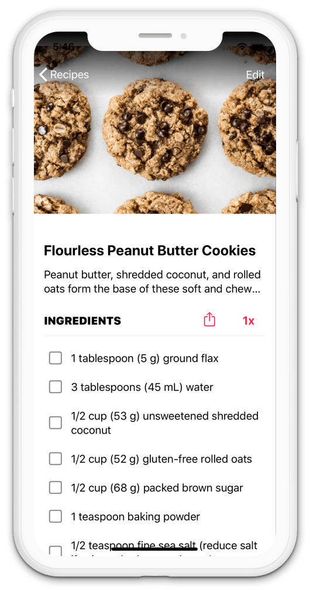
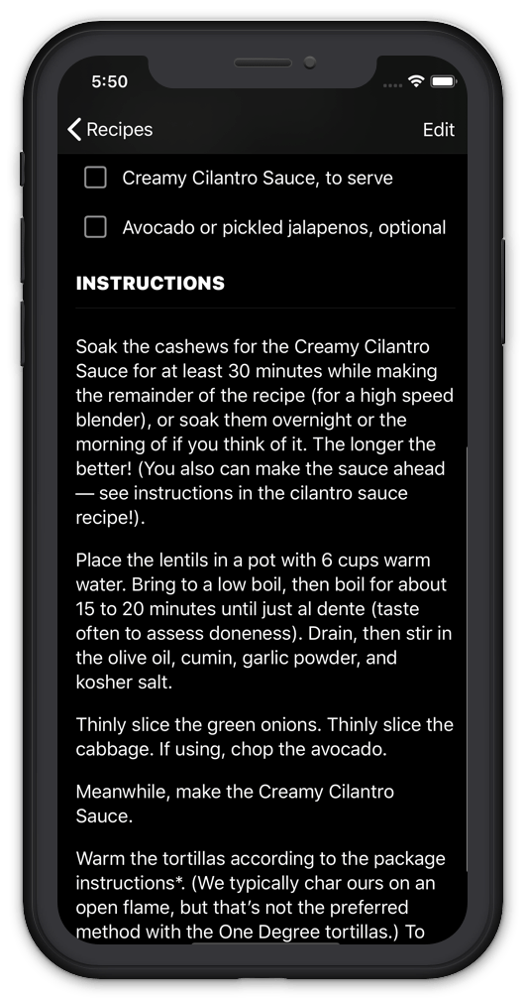
What I Learned
As someone with no formal UX training, projects like this reinforce my desire to pursue a career in UX design. Before taking a UX-led approach to building this product, I had spent spare time developing niche features for an app that I personally wanted. But it wasn't until I started studying and focusing on users beyond my own biases, that I was able to design an app that has a legitimate chance at growing a user base which can then be further surveyed and studied.
And by switching focus to UX design instead of the "cool new tool" that I wanted to code, it has sped up the timeline for releasing this app to the App Store.
My main concern is that some of the assumptions made based on the pseudo user research conducted for this project may prove weak. But I ease those concerns with the knowledge that this is intended as an MVP and that once real users begin to use the product, I will be able to correct any misdirection in course.
"The universe is in order when your station is set up the way you like it: you know where to find everything with your eyes closed…"
Anthony Bourdain
Kitchen Confidential